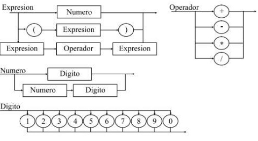

Práctica #1
Conceptos Fundamentales de Lenguajes de Programación
-
¿Qué es un Lenguaje de Programación?
Es un lenguaje como tal, conformado por una serie de instrucciones utilizadas para producir dirversos resultados que son interpretados posteriormente en una salida de sistema. Los Lenguajes de Programación suelen ser utilizados para el desarrollo de algoritmos computacionales.
Estos son conformados por Sintaxis, Semántica y Léxico, lo cual nos permite diferenciar la forma en que es estructurado. Cada lenguaje tiene distintas estructuras, al igual que la posibilidad de abarcar distintos paradigmas existentes para la programación. -
¿Cómo debería de ser un Lenguaje de Programación?
Un lenguaje de programación debe permitir que una persona con un buen nivel lógico pueda generar instrucciones que serán dadas a una máquina para si posterior ejecución. Aunque no existe un lenguaje que pueda resolver todos los posibles casos de la manera más optima, siempre habrá un lenguaje que lo haga, y abra otro que pueda realizarlo sin que la persona encargada de la programación deba complicarse mucho.
-
¿Qué es un Lenguaje de Representación?
Es un conjunto de etiquetas que contienen atributos y valores para la representación de información diversa de una manera organizada y concisa.
-
¿Qué es un Lenguaje de Consulta?
Son aquellos lenguajes que nos permiten recuperar información almacenada en las llamadas Bases de Datos, comprenden una serie de instrucciones lógicas y sencillas que nos permiten recopilar y ordenar información de la manera en que nos sea más conveniente, así mismo como agruparla o incluso filtrarla.
-
Menciona un ejemplo de un lenguaje de representación y otro de un lenguaje de consulta.
El Lenguaje de Representación más utilizado es el HTML.
El Lenguaje de Consulta mayormente conocido es el SQL. -
Definición de:
-
Sintaxis
Define la estructura básica presente en el lenguaje utilizado. Esto es la manera en que se definen todas las instrucciones de los programas a crear mediante este lenguaje.
-
Semántica
Es la forma lógica de expresar sentencias, ya sean matemáticas, lógicas, etc. Es decir, esta nos permite seguir una secuencia de instrucciones que podamos comprender sin mucho esfuerzo.
-
-
¿Cuales son los Elementos de la Sintaxis?
- Elementos Terminales (Léxico o Vocabulario).
- Elementos no Terminales (Construcciones intermedias de la Gramática).
-
Notación Backus-Naur Form (BNF).
